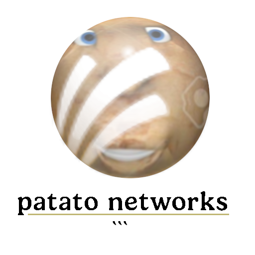

PatatoFELIZ
I, can do many things.
Including telling jokes Ha ha ha!
Your very own super radical companion!
Patato is absolutely TUBULAR! He can
- Answer your questions with artificial intelligence spud brainz from the future, MAN!
- Tell jokes that will actually make you laugh unlike your dad's jokes
- Download stuff for you, because it's definitely the most necessary and least redundant feature for a desktop friend!
- Repeat the totally rad things you say!!!!!1!
Step aside, purple gorilla!
Did you know you can download patato to your cell phone? Yeah, that's how absolutely radical patato is compared to [the bonz]. It's on Windows, it's on Macintosh, it's on Linux, even on your 'droid, CAN YOU BELIEVE IT?!?!?!
Patato is lightyears smarter than your average little ugly 3-D ape too! Ask him anything you could imagine and his gravegravegrave brain will help you with things ranging from your homework to even centering a div! How CRAZY is that?
So what are you waiting for pal?
DOWNLOAD
Windows -
MacOS -
Linux -
Android
PatatoFELIZ is sponsored by:

"PatatoFELIZ is very useful for our company."
-- Patato Javier, Patato Networks CEO
HyperTextedLabs Software - Source code